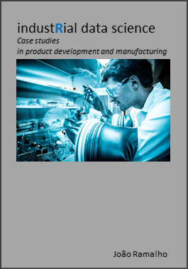

About
I'm a senior Industrial Data Scientist and my main interests are in:
- Design of Experiments
- Measurement System Analysis
- Process Control
I'm active in the in the manufacturing industry since 22 years, having been first with Philip Morris, then Rolex and now Nestlé. Having held numerous positions in R&D, Operations and IT I have a broad understanding of how consumer goods are conceived, industrialized and manufactured.
My background is Mechanical Engineering from the Instituto Superior Tecnico of Lisbon, I have a Project Management certification from PMI and a Data Science certification from DataCamp. Currently I'm specializing in Data Visualization at the Swiss technical university EPFL.
Book
Produce locally, use renewable energies, reduce food waste, increase packaging recyclability, avoid polution, protect biodiversity. These are only a few of our many current challenges. But improving Products and Production Processes requires skilled data analysis and a strong understanding of manufacturing processes.
My book industRial Data Science adressed to Scientists, Engineers and Technicians in the Manufacturing Industry, has a collection of case studies adapted from real life projects. It provides step by step descriptions of how to pragmatically improve product quality, reduce waste and optimize operational costs. In the final chapters it provides instructions on how to download and use original open source software tools to handle most of the examples.